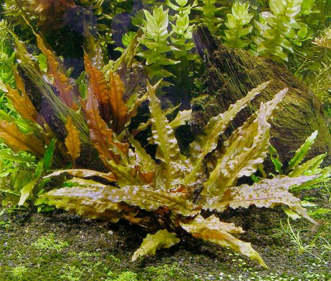

Species Profile
Cryptocoryne Wendtii Red
Introduction
Cryptocoryne wendtii is one of the most popular, and widely available aquatic plants in the aquarium
hobby. It has several color variations, and it can be found in green, red and brown colors. The size of
the leaves can vary greatly, and even the texture of the leaves can differ from plant to
plant.
This plant was originally native to Sri Lanka, though it has become established as an
invasive species in Florida in recent years. It is commonly found in streams and rivers throughout Sri
Lanka, and it tends to grow in shaded areas.
Care
Cryptocoryne wendtii is an extraordinarily hardy plant, and it will thrive under low lighting and in both
soft and hard water conditions. It is an excellent plants for both experienced and beginner aquarists,
as while it is easy to grow, it can also be aquascaped into stunning displays in experienced
hands.
It must be planted directly into the substrate, and forms deep roots that make this plant difficult to
uproot. This makes it an excellent plant if you’re looking for a plant that can survive the attention of
notorious diggers like certain cichlids or loaches. It should be regularly fertilized, and at the very
least Seachem Flourish Trace should be added after weekly water changes.
Cryptocryne wendtii will
flourish under low light conditions. Due to its slow growing nature, other plants may crowd it out in
aquariums with high levels of lighting. When choosing lighting, a T5 or T8 fluorescent bulb should be
used to mimic full spectrum lighting. Some aquarists have reported success with LED lights in recent
years, so these lights may also make a good choice for growing cryptocoryne wendtii.
When first
introducing cryptocoryne wendtii to an aquarium, it is common to experience a significant leaf die off.
Many of the leaves will quickly wither away, but don’t assume that the plant is dead if this happens.
This is common occurrence, and is a result of a sudden change to the plants water conditions. The roots
of the plant will normally remain healthy, and new leaves should been seen shortly (though this can
sometimes take a while).
Propagation
Propagation is simple for cryptocoryne wendtii, and involves removing a small portion of the root with
some stem attached. This can then be planted in the substrate, and will slowly develop into a new
plant.
One common practice is to pull mature plants apart, creating numerous new plants which can
then be spread across the aquarium or sold to others.
Aquascaping
Cryptocoryne wendtii tends to stay relatively small, and is best as a foreground or midground plant in aquariums. It grows thickly, and can be used to cover up unsightly portions of other plants, or simply as a focal point in an aquarium.